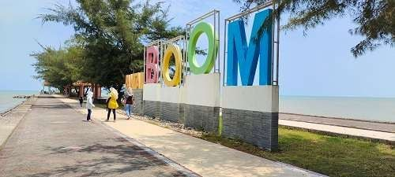
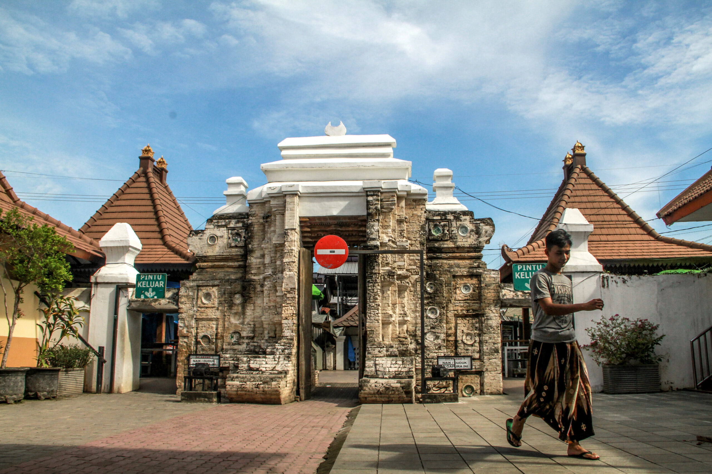
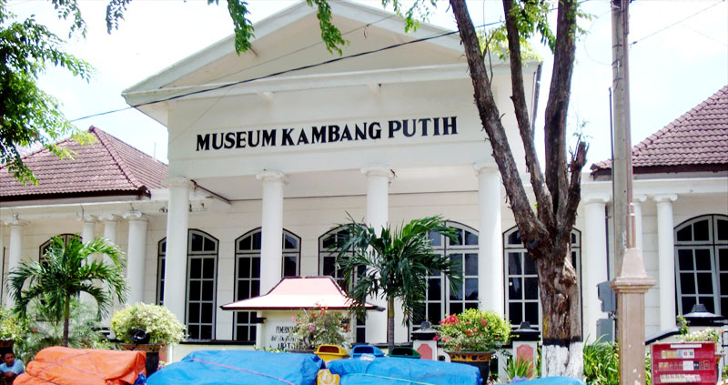
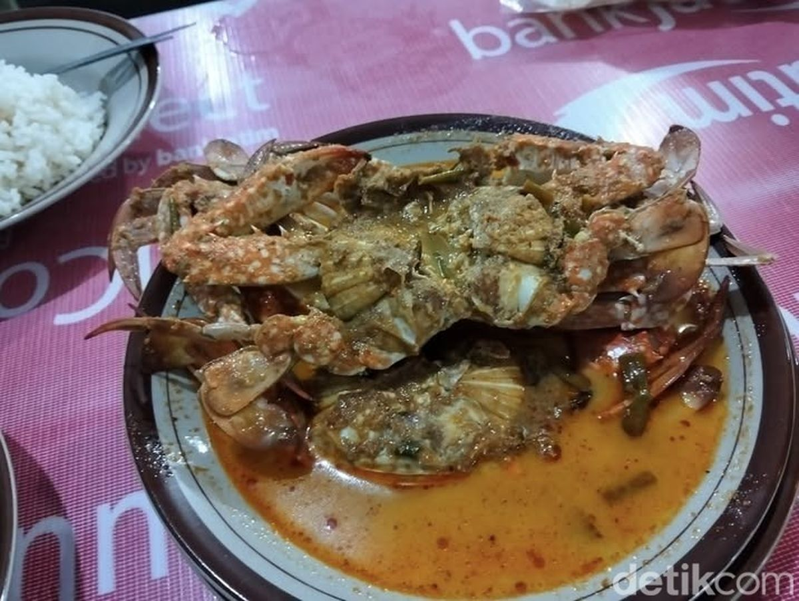
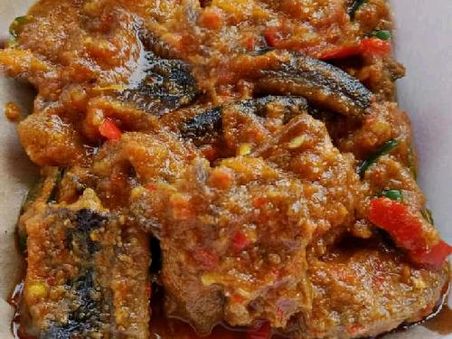
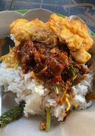

Jelajahi Pesona Alam dan Budaya Tuban
Wisata di Tuban
Temukan berbagai destinasi wisata menarik di Tuban, mulai dari pantai yang indah hingga situs sejarah yang kaya akan budaya.
Pantai Boom

Pantai Boom adalah salah satu pantai terkenal di Tuban yang menawarkan pemandangan matahari terbenam yang menakjubkan dan berbagai aktivitas air.
Wisata Religi Sunan Bonang

Makam Sunan Bonang adalah salah satu destinasi wisata religi di kabupaten Tuban. Sunan Bonang merupakan tokoh Wali Songo yang menyebarkan Islam di Tanah Jawa, salah satunya yaitu di Kabupaten Tuban.
Museum Kambang Putih

Museum Kambang Putih adalah salah satu museum sejarah terkenal di Tuban. Museum ini menempati lokasi yang sangat strategis, Di sebelah Museum Kambang Putih, terdapat makam Sunan Bonang, sosok penyebar agama Islam di Tanah Jawa.
Kuliner di Tuban
Temukan berbagai kuliner yang berkualitas di Tuban, mulai dari makanan tradisional hingga kuliner modern.
Rajungan Remason

Kare rajungan khas Tuban yang memiliki rasa pedas. Ini adalah hidangan yang dibuat dari rajungan (salah satu jenis kepiting) yang dimasak dengan berbagai bumbu dan santan hingga rasanya kaya dan tidak amis.
Belut Mbah Bagong

Kuliner ini bisa ditemukan di Jalan Majapahit, Desa Tegalagung, Kecamatan Semanding, Tuban. Belut yang dimasak dengan bumbu rica-rica ini disajikan dengan rempah-rempah pedas yang memanjakan lidah.
Sego Dupak

Sego dupak atau nasi dupak Khas Tuban menawarkan pengalaman kuliner yang menggugah selera dengan paduan sempurna antara nasi dan lauk-pauk yang beraneka ragam. Nasi dupak diyakini telah menjadi hidangan masyarakat sejak masa kolonial.
Dumbek

Dumbek Tuban adalah jajanan tradisional khas Tuban yang manis, dibungkus dengan daun lontar (siwalan) dan berbentuk seperti terompet. Jajanan ini terbuat dari adonan tepung beras, santan, dan gula merah, dengan tekstur lembut dan rasa yang legit.